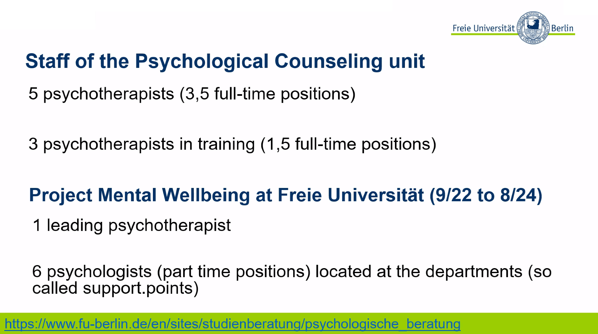

Webinar 6 "Freie Universität Berlin's Psychological Counseling Service" (May 29, 2024)
On May 29, a seminar was held showcasing the work of the Freie Universität Berlin's Psychological Counseling Service and their projects on psychological support and mental health. This seminar was presented by Brigitte Reysen-Kostudis (FU Berlin) and Lars Kuchinke, International Psychoanalytic University Berlin.

The Freie Universität Berlin's Psychological Counseling Service offers a comprehensive range of services to support the mental health of students and staff. These services, which began as early as the COVID-19 period, involve work of professional psychotherapists and psychologists who are responsible for specific faculties. This structure allows students and staff to receive support from professionals experienced in dealing with issues relevant to their field of study or work. Appointments can be easily booked online.
Examples of services provided include:
- Individual Counseling. Personalized sessions to address specific concerns.
- Group Counseling. Sessions where individuals with similar challenges can share experiences and learn from each other.
- Workshops and Seminars. Educational sessions on various mental health topics to equip participants with coping strategies.
- Crisis Intervention. Immediate support for those experiencing a mental health crisis.
- Support for International Students. Assistance for international students adjusting to life in Germany.

The seminar also discussed the Mental Health Project at Freie Universität Berlin, a comprehensive initiative to promote mental health awareness and provide support. Key components of the project include: 1) Workshops and information sessions on mental health and stress management. 2) Plans to extend the project for two additional years to enhance mental health management, introduce longer-term counseling, provide staff supervision, and expand workshop offerings.

This initiative underscores the university's dedication to fostering a supportive and inclusive environment that promotes mental well-being. If you are a student or staff member of Freie Universität Berlin and need psychological support, further information is available on the university's website. Additional resources: Website of the Psychological Counseling Service of Freie Universität Berlin